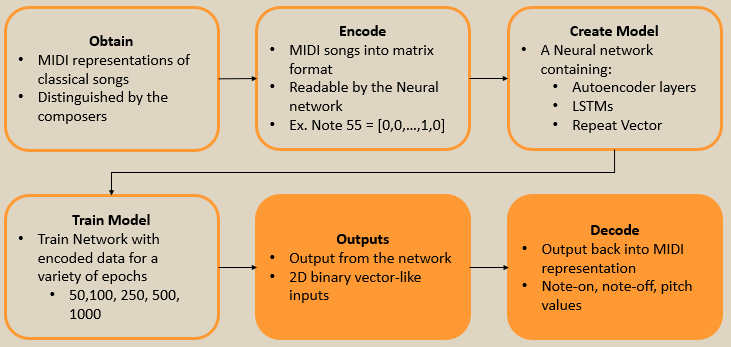
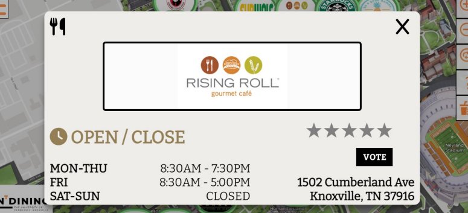
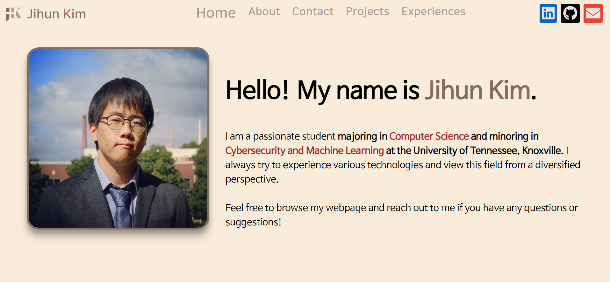
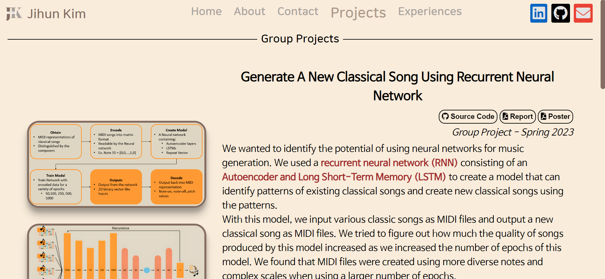
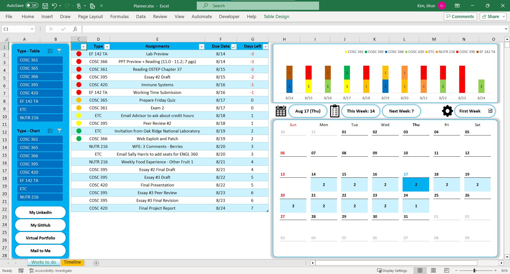
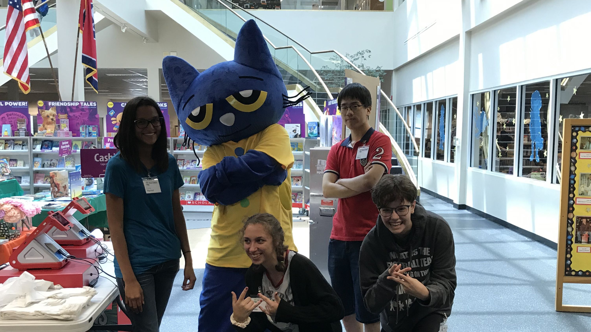

Hello! My name is Jihun Kim.
I am a passionate student majoring in Computer Science and minoring in Cybersecurity and Machine Learning at the University of Tennessee, Knoxville. I always try to experience various technologies and view this field from a diversified perspective.Feel free to browse my webpage and reach out to me if you have any questions or suggestions!
Education
Education
University of Tennessee, Knoxville

- Aug 2020 - May 2024
- Cumulative GPA:
- 3.98/4.00
- Dean's List:
- Fall 2020 - Spring 2023
- Major: Computer Science
- Data Structures & Algorithms
- Systems Programming
- Software Engineering
- Computer Organization
- Operating Systmes
- Minors:
- Cybersecurity
- Cryptography
- Human Factors in Cybersecurity
- Machine Learning
- Biologically-Inspired Computation
- Fundamentals of Digital Archeology
- Intro to AI
- Others:
- Statistics
- Probability and Random Variables
- Physics for Engineers
- Electricity and Magnetism
- Club Activities:
- HackUTK and utkML
Skills
Skills
💡Proficient
- Python
- Cybersecurity
- Ex. Diffie-Hellman and RSA
- Machine Learning
- Used in almost all research and projects.
- Ex. Create a new classical song using Recurrent Neural Network.
- C++
- Data Structures & Algorithms
- Used in almost all university assignments.
- Used in some of personal projects.
💡Learning/Used
- C, C#, and GO
- Typescript and Sass
- Used for re-designing University dining website.
- HTML5, JavaScript, and CSS3
- Used for making a portfolio website and other personal websites.
💡Tools and Libraries
- Excel and Pandas
- Used for making graphs and tables.
- VS Code
- GitHub and GitLab
- Jupyter Notebook and TensorFlow
- Mostly used for Machine Learning projects.
Group Projects


Generate A New Classical Song Using Recurrent Neural Network
Group Project - Spring 2023
We wanted to identify the potential of using neural networks for music generation. We used a recurrent neural network (RNN) consisting of an Autoencoder and Long Short-Term Memory (LSTM) to create a model that can identify patterns of existing classical songs and create new classical songs using the patterns.With this model, we input various classic songs as MIDI files and output a new classical song as MIDI files. We tried to figure out how much the quality of songs produced by this model increased as we increased the number of epochs of this model. We found that MIDI files were created using more diverse notes and complex scales when using a larger number of epochs.
This project improved my understanding of machine learning and neural networks and helped me a lot in my research related to machine learning when I later interned at ORNL.
Improving University Dining Website
Group Project - Fall 2022
My friends and I wanted to improve the University Dining website based on the problems we had with it. Typescript and Sass were mainly used to improve the design of the dining website and information such as restaurant locations and menus were collected, organized, and reflected on the website. Furthermore, we designed various features such as zoom buttons and a star rating system. These added features made the website more complete and functional.Students can use the filter function to find the restaurant they want more easily, and by showing the restaurant information in a pop-up window, students can find the information they are looking for more easily and quickly.
Through this group project, I improved my understanding of website production through typescript and sass and gained experience in how to manage work by adjusting schedules during programming collaboration.


Personal Projects


Virtual Portfolio Website
Personal Project - Summer 2023
While thinking about how to convey my programming experience more impressively, I came up with the idea of conveying information through a website. I can design the way I want and can convey the information I want without restrictions, so I believe a virtual portfolio website will be very convenient.Although I used HTML, Javascript, and CSS for the first time while working on this project, the experience with Typescript and Sass accumulated while working on the "Improving University Dining Website" project was very helpful.
The experience of using a language other than the programming language I usually use was quite fresh and fun. I encountered big and small difficulties while creating a website, and in the process of solving them myself, it was a great help in improving my skills in HTML, Javascript, and CSS. Also, while making the website, I paid a lot of attention to the color and layout of the data, and I came to pay more attention to the front end.
I would like to continue updating and evolving this website. Please reach out to me if you have any questions or suggestions!
Puzzle Solvers: N-Queens and Knight's Tour
Personal Project - Summer 2022, Summer 2023
Do you like solving puzzles? I do. N-queens problem and Knight's Tour are some examples of my favorite puzzles.N-queens is a puzzle in which n number of queens are placed on a chess board of n*n size without interfering on their route with each other, and Knight's Tour is a puzzle in which a knight passes through all squares of a chess board of a certain size. I thought I could make a program to solve this puzzle using recursion, and I succeeded in implementing it using C++.
I tried to implement the C++ code of the two puzzles into a website using HTML, JavaScript, and CSS. Implementing a puzzle-solver website required a lot of understanding of JavaScript. I hadn't learned much about JavaScript, so it was quite tricky, but I was able to complete the website by learning how to do it myself and having fun implementing the website.
Users can check the correct answer by adjusting the desired size of n on the N-queens Solver website and can check the path of the queen by hovering the mouse over "Q", which stands for a queen. On the Knight's Tour Solver website, users can check the correct answer by adjusting the size of the board and the starting position of the knight, as well as checking the correct answer through the animation of the knight moving around the board.


Cryptography: AES, SHA-1, Diffie-Hellman, and RSA
Personal Project - Fall 2022
While learning cryptography, I implemented Advanced Encryption Standard(AES) and Secure Hash Algorithm 1(SHA-1) in C++, and implemented Diffie-Hellman and Rivest-Shamir-Adleman(RSA) in Python. Every code was hard-coded.I referenced FIPS 197 and Rijndael Cipher Animation to implement AES in C++. Both resources explain each process of AES better than any other materials and are of great help in understanding AES. It was my first challenge to implement cryptography concepts in real code, so it was a little hard to understand at first, but it was really fun to implement each step in AES using C++.
I referenced FIPS 180-4 to implement SHA-1 in C++. SHA-1 is constructed using the Merkle-Damgård Construction, and SHA-1 has its unique padding algorithm. Implementing SHA-1 was a little complex due to its padding algorithm and internal function, but it was also fun to implement.
To implement Diffie-Hellman and RSA, I need to implement Fast Modular Exponentiation and a function to check prime using Miller-Rabin Algorithm. After then, I implemented Diffie-Hellman and RSA with Python using two primes I found. In order to implement Diffie-Hellman and RSA, it was important to be mindful of the relationship between numbers and correctly encrypt, decrypt, and decode.
Excels: Planner and Statement of Expenditure
Personal Project - Fall 2022
I like to use Excel to organize my data. I often use Excel to organize my schedules and expenses, and Planner and Statement of Expenditure are examples.Planner.xlsx is a great help in managing schedules by re-organizing many schedules in the form of tables and calendars. In addition, by adding a filters, you can view or highlight only the schedules of the desired category. In the shared Planner.xlsx, the schedules have been arbitrarily formulated to help users understand. Furthermore, there were hyperlinks to folders at the bottom left to make it easy to access the necessary data, but it is replaced with other links to prevent confusion for viewers in the shared file.
Statement of Expenditure.xlsx categorizes consumption details by monthly consumption amount, payment methods, categories, and places of purchase, and displays them in a graph. Users can also use the filters on the right to see only the information they desired, giving them a better understanding of their spending history, which further helps users manage their finances.



Science Undergraduate Laboratory Internships
Oak Ridge National Laboratory
May 2023 - July 2023
I conducted research focused on improving semantic interoperability between different geographic categorization schemes using large language models with my mentor, Junchuan Fan.I had the opportunity to utilize various functions of natural language processing tools, focusing on information retrieval and semantic search. In addition, I analyzed the collected data by visualizing it in various types of graphs like clustered bar graphs or boxplots.
It was a very interesting experience to coordinate the direction of the research, analyze and interpret the results, and draw conclusions while conducting research.
Undergraduate Teaching Assisstant
University of Tennessee, Knoxville
Aug 2022 - May 2023
In the courses, Physics and Modeling for Engineers I & II, I set up equipment to solve problems that involve physics knowledge.Furthermore, I have helped increase students' understanding of commonly used programs such as Excel and MATLAB, and have contributed to increasing students' understanding of physical concepts such as Vectors, Newton's Laws, Conservation of Energy, Mass Moment of Inertia, and Torque.
Through these efforts, I helped students reduce their resistance to physics and lay the foundation for future engineering courses.

High School Math Tutoring
Clarksville High School
Sep 2019 - Feb 2020
Tutored high school students in Algebra I & II, Geometry, and Pre-Calculus at Clarksville High School. By tutoring students who need a conceptual understanding of mathematics, I helped them develop an interest in mathematics.Teen Reading Program Volunteering
Clarksville-Montgomery County Public Library
June 2019-July 2019
For the smooth progress of programs such as magic shows, readings, and science experiences, props were managed and guidance was provided to children and parents about the program. Serving the community and helping people was rewarding and quite enjoyable.
